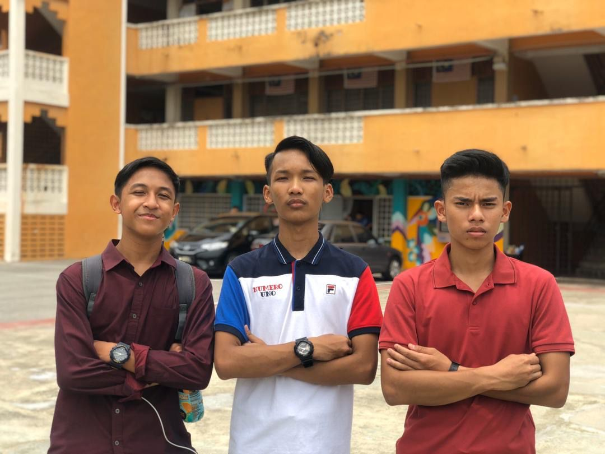
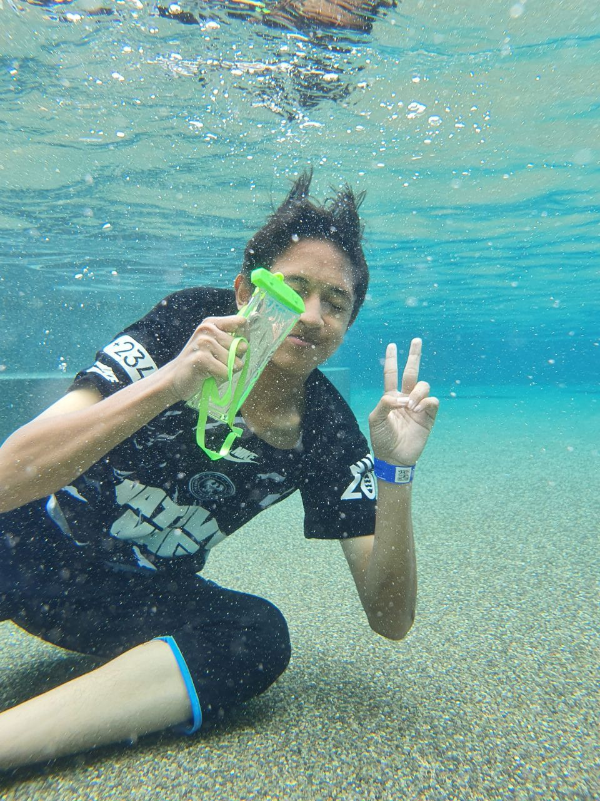

Eid celebration at UiTM Kedah |

This pic was taken after we take SPM result |

This pic shows how do I look underwater! |

This is when I took a picture with a Dazai cosplayer in animefest! |

This is the pic with my favorite cosplayer, Jotaro! |

I took a pic with Ultraman Tiga both multi type and dark type |